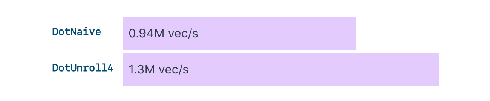
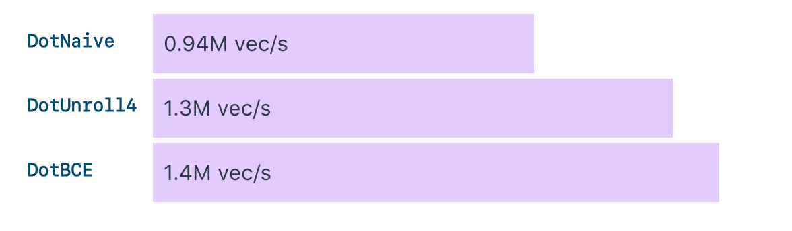
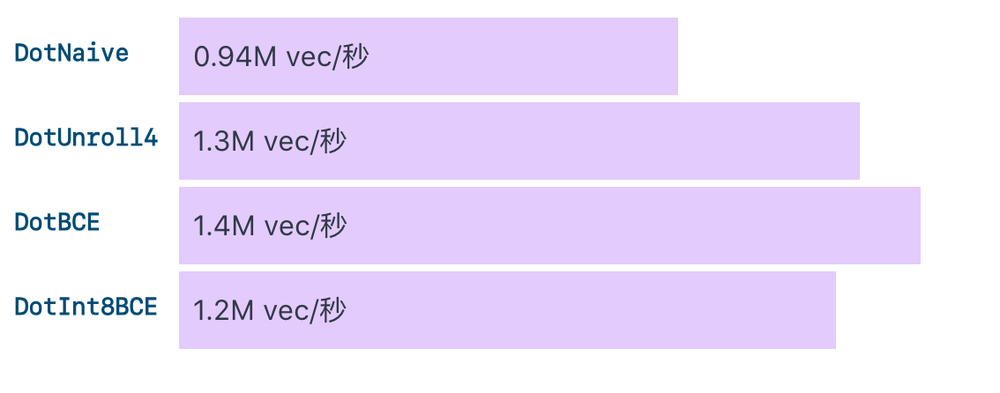
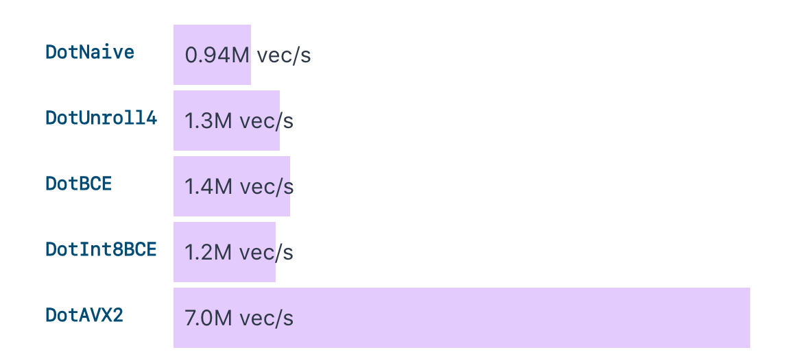
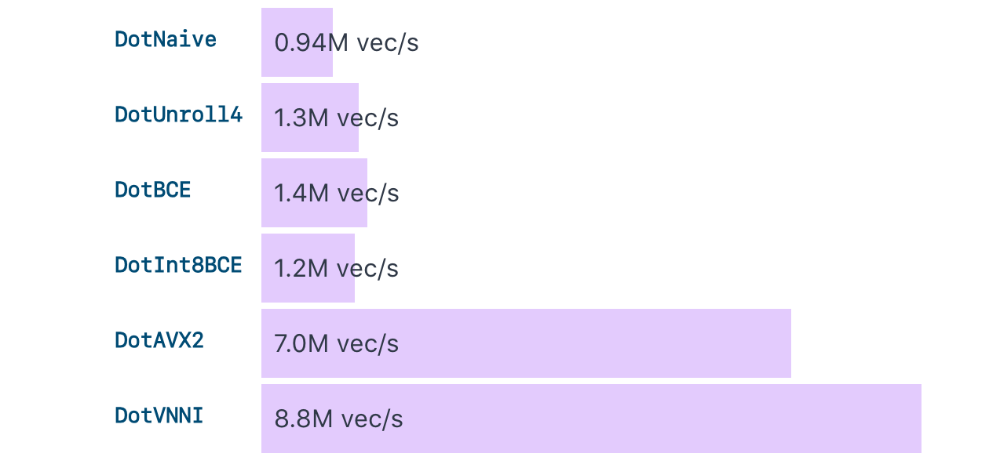

SourceGraph 的工程师 Camden Cheek 提供的一个利用SIMD进行Go性能优化的故事:From slow to SIMD: A Go optimization story。
这是一个关于某函数的故事，这个函数被大量调用，而且这些调用都在关键路径上。让我们来看看如何让它变快。
剧透一下，这个函数是一个点积函数。
点积（Dot Product），也称为内积或数量积，是一种数学运算，通常用于计算两个向量之间的乘积。点积的结果是一个标量（即一个实数），而不是一个向量。
假设有两个向量：
$$\mathbf{a}=\begin{bmatrix}a_1\\a_2\\\vdots\\a_n\end{bmatrix}$$
$$\mathbf{b}=\begin{bmatrix}b_1\\b_2\\\vdots\\b_n\end{bmatrix}$$那么，这两个向量的点积为：
$$\mathbf{a}\cdot\mathbf{b}=\sum_{i=1}^n a_ib_i=a_1b_1+a_2b_2+\cdots+a_nb_n$$
一些背景
在 Sourcegraph，我们正在开发一个名为 Cody 的 Code AI 工具。为了让 Cody 能够很好地回答问题，我们需要给它足够的上下文。我们做的一种方式是利用嵌入(embedding)。
为了我们的目的，嵌入是文本块的向量表示。它们用某种方式构建，以便语义上相似的文本块具有更相似的向量。当 Cody 需要更多信息来回答查询时，我们在嵌入上运行相似性搜索，以获取一组相关的代码块，并将这些结果提供给 Cody，以提高结果的相关性。
和这篇文章相关的部分是相似度度量，它是一个函数，用于判断两个向量有多相似。对于相似性搜索，常见的度量是余弦相似度。然而，对于归一化向量（单位幅度的向量），点积产生的排名与余弦相似度是等价的。为了运行一次搜索，我们计算数据集中每个嵌入的点积，并保留前几个结果。由于我们在得到必要的上下文之前无法开始执行 LLM，因此优化这一步至关重要。
你可能会想：为什么不使用索引向量数据库？除了添加我们需要管理的另一个基础设施外，索引的构建会增加延迟并增加资源需求。此外，标准的最近邻索引只提供近似检索，这与更易于解释的穷举搜索相比，增加了另一层模糊性。鉴于这一点，我们决定在我们的手工解决方案中投入一点精力，看看我们能走多远。
目标
下面的代码是一个计算两个向量点积的简单的Go函数实现。我的目标是刻画出我为优化这个函数所采取的方法，并分享我在这个过程中学到的一些工具。
|
|
除非另有说明，否则所有基准都在 Intel Xeon Platinum 8481C 2.70GHz CPU 上运行。这是一个 c3-highcpu-44 GCE VM。本博客文章中的代码都可以在这里找到。
循环展开 (Loop unrolling)
现代的CPU都有一个叫做指令流水线的东西，它可以同时运行多条指令，如果它们之间没有数据依赖的话。数据依赖只是意味着一个指令的输入取决于另一个指令的输出。
在我们的简单实现中，我们的循环迭代之间有数据依赖。实际上，每个迭代都有一个读/写对，这意味着一个迭代不能开始执行，直到前一个迭代完成。
一个常见的方法是在循环中展开一些迭代，这样我们就可以在没有数据依赖的情况下执行更多的指令。此外，它将固定的循环开销（增量和比较）分摊到多个操作中。
|
|
在我们的展开代码中，乘法指令的依赖关系被移除了，这使得CPU可以更好地利用流水线。这使我们的吞吐量比我们的简单实现提高了37%。

注意，我们实际上可以通过调整我们展开的迭代次数来进一步提高性能。在基准机器上，8似乎是最佳的，但在我的笔记本电脑上，4的性能最好。然而，改进是与平台相关的，而且改进相当微小，所以在本文的其余部分，我将使用4个展开深度来提高可读性。
边界检查消除 (Bounds-checking elimination)
为了防止越界的切片访问成为安全漏洞（如著名的 Heartbleed 漏洞），go 编译器在每次读取之前插入检查。你可以在生成的汇编中查看它（查找 runtime.panic）。
编译的代码看起来像我们写了这样的东西：
|
|
在像这样的频繁调用循环(hot loop)中，即使是现代的分支预测，每次迭代的额外分支也会增加相当大的性能损失。这在我们的例子中尤其明显，因为插入的跳转限制了我们可以利用流水线的程度。
如果我们可以告诉编译器这些读取永远不会越界，它就不会插入这些运行时检查。这种技术被称为“边界检查消除”，相同的模式也适用于Go之外的语言。
理论上，我们应该能够在循环之外做所有的检查，编译器就能够确定所有的切片索引都是安全的。然而，我找不到正确的检查组合来说服编译器我所做的是安全的。我最终选择了断言长度相等的组合，并将所有的边界检查移到循环的顶部。这足以接近无边界检查版本的速度。
|
|
这个边界检查的最小化使我们的性能提高了 9%。但是始终未将检查降到零，没有什么值得一提的。

这个技术对于内存安全的编程语言来说是非常有用的，比如Rust。
一个问题抛给读者： 为什么我们要像a[i:i+4:i+4]这样切片，而不是只是a[i:i+4]？
量化 (Quantization)
目前我们已经提高了单核的搜索的吞吐率50%以上，但现在我们遇到了一个新的瓶颈：内存使用。我们的向量是1536维的。用4字节的元素，这就是每个向量6KiB，我们每GiB代码生成大约一百万个向量。这很快就积累起来了。我们有一些客户带着一些大型的monorepo来找我们，我们想减少我们的内存使用，这样我们就可以更便宜地支持这些大型代码库。
一个可能的缓解措施是将向量移动到磁盘上，但是在搜索时从磁盘加载它们可能会增加显著的延迟，特别是在慢速磁盘上。相反，我们选择用int8量化我们的向量。
有很多方式可以压缩向量，但我们将讨论整数量化，这是相对简单但有效的。这个想法是通过将4字节的float32向量元素转换为1字节的int8来减少精度。
我不会深入讨论我们如何在float32和int8之间进行转换,因为这是一个相当深奥的话题,但可以说我们的函数现在看起来像下面这样:
|
|
这个改变导致内存使用量减少了4倍，但牺牲了一些准确性（我们进行了仔细的测量，但这与本博客文章无关）。
不幸的是，这个改变导致我们的性能下降了。查看产生的汇编代码(go tool compile -S),我们可以看到一些int8到int32转换的指令，这可能解释了差异。我没有深入研究，因为我们在下一节中的所有性能改进都变得无关紧要了。

SIMD
到目前为止，速度提升还不错，但对于我们最大的客户来说，还不够。所以我们开始尝试一些更激进的方法。
我总是喜欢找借口来玩SIMD。而这个问题似乎正好对症下药。
对于还不熟悉SIMD的同学来说，SIMD代表“单指令多数据”(Single Instruction Multiple Data)。就像它说的那样，它允许你用一条指令在一堆数据上运行一个操作。举个例子，要对两个int32向量逐元素相加，我们可以用ADD指令一个一个地加起来，或者我们可以用VPADDD指令一次加上64对，延迟相同（取决于架构）。
但是我们还是有点问题。Go不像C或Rust那样暴露SIMD内部函数。我们有两个选择：用C写，然后用Cgo，或者用Go的汇编器手写。我尽量避免使用Cgo，因为有很多原因，这些原因都不是根本原因，但其中一个原因是Cgo会带来性能损失，而这个片段的性能是至关重要的。此外，用汇编写一些东西听起来很有趣，所以我就这么做了。
我想要这个这个算法可以输出到其他编程语言，所以我限制自己只使用AVX2指令，这些指令在大多数x86_64服务器CPU上都支持。我们可以使用运行时进行检测，在纯Go中回退到一个更慢的选项。
|
|
这个实现的核心循环依赖于三条主要指令：
- VPMOVSXBW：将一个
int8加载到一个int16向量中 - VPMADDWD：将两个
int16向量逐个元素相乘,然后将相邻的两对模糊堆叠相加,生成一个int32向量。 - VPADDD：这将生成的 int32 向量累积到我们的运行总和
VPMADDWD 在这里是真正的主力军。通过将乘法和加法步骤合并为一个步骤，它不仅节省了指令，还帮助我们避免了溢出问题，同时将结果扩展为 int32。
让我们看看这给我们带来了什么。

哇，这是我们之前最好表现的 530% 的增加！SIMD 胜利了 🚀。
现在，情况并非一帆风顺。在 Go 中手写汇编是有点奇怪的。它使用自定义的汇编器，这意味着它的汇编语言看起来与您通常在网上找到的汇编片段相比，会有略微不同而令人困惑。它有一些奇怪的怪癖，比如改变指令操作数的顺序或者使用不同的指令名称。在 Go 汇编器中，有些指令甚至没有名称，只能通过它们的二进制编码来使用。不得不说一句：我发现 sourcegraph.com 对于查找 Go 汇编示例非常有价值，可以供参考。
话虽如此，与 Cgo 相比，还是有一些不错的好处。调试仍然很好用，汇编可以逐步执行，并且可以使用 delve 检查寄存器。没有额外的构建步骤（不需要设置 C 工具链）。很容易设置一个纯 Go 的备用方案，所以跨编译仍然有效。常见问题被 go vet 捕捉到。
SIMD ... 更大
以前，我们限制自己只使用 AVX2，但如果不这样呢？AVX-512 的 VNNI 扩展添加了 VPDPBUSD 指令，该指令计算 int8 向量而不是 int16 的点积。这意味着我们可以在单个指令中处理四倍的元素，因为我们不必先转换为 int16，并且我们的向量宽度在 AVX-512 中加倍！
唯一的问题是该指令要求一个向量是有符号字节，另一个向量是无符号字节。而我们的两个向量都是有符号的。我们可以借鉴英特尔开发者指南中的技巧来解决这个问题。给定两个 int8 元素 an 和 bn，我们进行逐元素计算如下：an * (bn + 128) - an * 128。an * 128 项是将 128 加到 bn 以将其提升到 u8 范围的超出部分。我们单独跟踪这部分并在最后进行减法。该表达式中的每个操作都可以进行向量化处理。
|
|
这种实现又带来了另外 21% 的改进。真不赖！

下一步
好吧，我对吞吐量增加 9.3 倍和内存使用量减少 4 倍感到非常满意，所以我可能会适可而止了。
现实生活中的答案可能是“使用索引”。有大量优秀的工作致力于使最近邻居搜索更快,并且有许多内置向量DB使其部署相当简单。
然而，如果你想要一些有趣的思考，我的一位同事在 GPU 实现的点积。
一些有价值的资料
- 如果你还没有使用过 benchstat，你应该使用。太棒了。基准测试结果超级简单统计比较。
- 不要错过compiler explorer，这是一个非常有用的挖掘生成的汇编代码工具。
- 还有一次,我被技术上的挑战吸引,实现了ARM NEON的版本,这带来了一些有趣的对比。
- 如果您还没有遇到过它，Agner Fog 说明表会让您大吃一惊,很多底层优化的参考资料。在优化点积函数的工作中，我使用它们来理解指令延迟的差异,以及为什么某些流水线优于其他流水线。